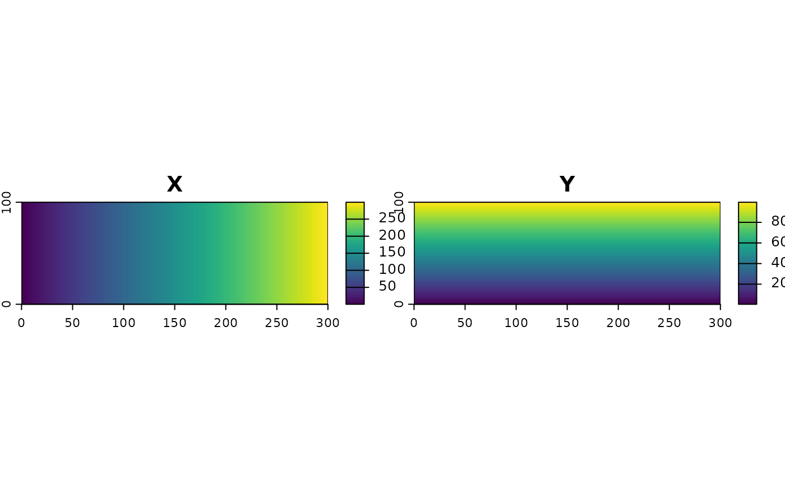
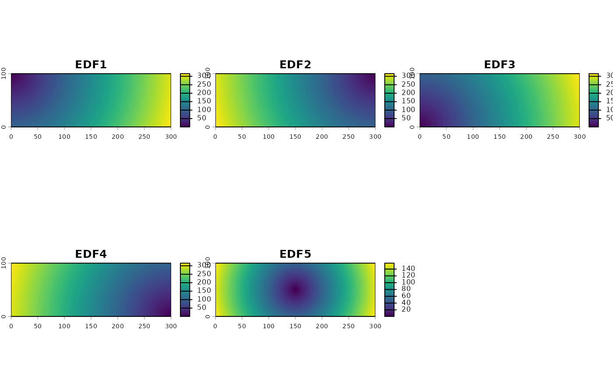
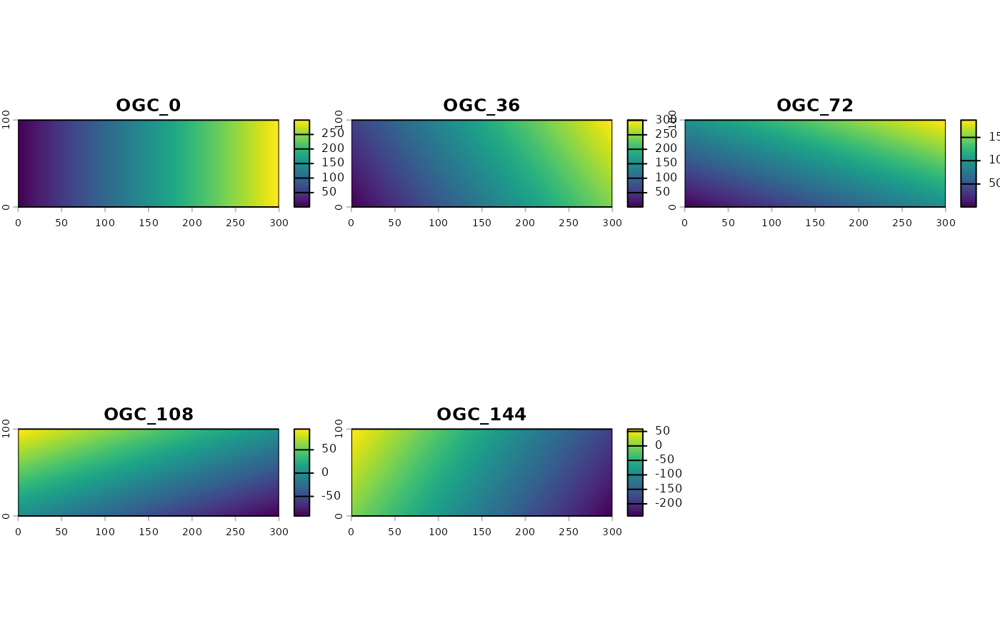

make_proxy.RdThe make_proxy() function generates spatial proxies for a given raster object.
It generates three types of proxies: coordinates, Euclidean Distance Fields (EDF), and Oblique Geographic Coordinates (OGC).
Additionally, the add_proxy() function can be used to add a proxy to an existing raster object.
make_proxy(rast_grid, type, n)
add_proxy(rast_grid, type, n)A raster object with the desired dimensions
The type of proxy to generate. Options are coordinates ("coordinates"), Euclidean Distance Fields ("edf"), and Oblique Geographic Coordinates ("ogc")
The number of angles to use when generating oblique geographic coordinates. Only used when type = "ogc"
A SpatRaster object with the generated spatial proxies
Behrens, T., Schmidt, K., Viscarra Rossel, R. A., Gries, P., Scholten, T., & MacMillan, R. A. (2018). Spatial modelling with Euclidean distance fields and machine learning. European journal of soil science, 69(5), 757-770.
Møller, A. B., Beucher, A. M., Pouladi, N., & Greve, M. H. (2020). Oblique geographic coordinates as covariates for digital soil mapping. Soil, 6(2), 269-289.
rast_grid = terra::rast(ncols = 300, nrows = 100, xmin = 0, xmax = 300, ymin = 0, ymax = 100)
proxy_coords = make_proxy(rast_grid, "coordinates")
proxy_edf = make_proxy(rast_grid, "edf")
proxy_ogc = make_proxy(rast_grid, "ogc", 5)
terra::plot(proxy_coords)

terra::plot(proxy_edf)

terra::plot(proxy_ogc)
